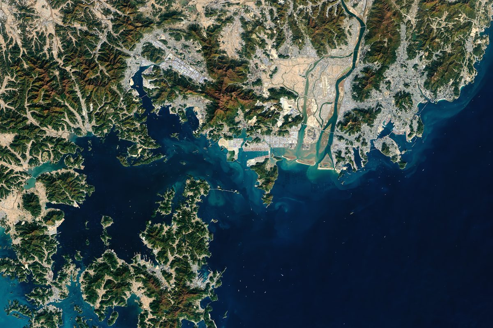

남부발전·부산항만공사, 부산항 항만부지 육상풍력 공동개발 협약…해상풍력·태양광·ESS로 넓힐 계획

남부발전은 기술·재무 타당성 조사, 항만공사는 부지 제공·계통 연계 맡아…발전 용량·사업비·위치·일정은 아직 공개 안 돼
한국남부발전과 부산항만공사가 3일 부산항만공사 본사에서 '부산항 탄소중립 실현을 위한 재생에너지 공동개발 업무협약'을 맺고 부산항 항만부지에 육상풍력발전을 함께 개발하기로 했다. 협약에 따라 남부발전은 기술·재무 분석을 포함한 사업 타당성 조사를 맡고, 부산항만공사는 항만부지를 내주고 전력계통 연계 등 기반시설 확보를 지원한다. 두 기관은 육상풍력을 시작으로 해상풍력과 태양광, 에너지저장장치(ESS)로 협력 분야를 넓히고 항만 입주기업의 친환경 에너지 수요를 뒷받침할 계획이다. 윤상옥 남부발전 재생에너지전무는 이번 협약이 "국내 최초로 항만 인프라를 결합해" 공공기관끼리 새 사업모델을 만드는 출발점이라고 말했다. 발전 용량과 사업비, 설치 위치, 일정은 공개되지 않았으며, 사업은 타당성 조사를 앞둔 협약 단계다.
시민에너지 관점
공공기관 두 곳이 공공 부지에 발전소를 짓는 이번 구상에서 아직 비어 있는 자리는 그 전기를 쓸 입주기업과 항만 곁에 사는 주민이다. 벨기에 플랑드르의 시민 협동조합 에코파워는 주민 출자로 풍력발전기를 세우고 거기서 난 전기를 조합원에게 공급해, 전기를 만드는 쪽과 쓰는 쪽이 같은 공동체 안에 있는 구조를 만들어 왔다. 공공 사업에 주민 지분을 넣으면 절차가 복잡해진다는 우려도 있지만, 지분 구조는 타당성 조사 단계에서 설계에 넣는 편이 사업이 굳어진 뒤 덧붙이는 것보다 훨씬 쉽다. 두 기관은 타당성 조사 범위에 입주기업과 인근 주민의 출자 참여 방안을 함께 넣고, 그 결과를 공개해야 한다.
출처: 에너지데일리 2026-11-03 송병훈 원문 보기
출처: 파이낸셜뉴스 2026-11-03 이유범 원문 보기
韓国南部発電・釜山港湾公社、釜山港の港湾用地で陸上風力の共同開発協約…洋上風力・太陽光・ESSへ広げる計画
南部発電は技術・財務面の事業性調査、港湾公社は用地提供と系統連系を担当…発電容量・事業費・位置・日程はまだ公表されず
韓国南部発電と釜山港湾公社は3日、釜山港湾公社本社で「釜山港のカーボンニュートラル実現に向けた再生可能エネルギー共同開発業務協約」を結び、釜山港の港湾用地で陸上風力発電を共同で開発することにした。協約により、南部発電は技術・財務分析を含む事業性調査を担い、釜山港湾公社は港湾用地を提供し、電力系統への連系などインフラの確保を支援する。両機関は陸上風力を皮切りに洋上風力や太陽光、エネルギー貯蔵装置（ESS）へと協力分野を広げ、港湾に入居する企業の環境配慮型エネルギー需要を後押しする計画だ。南部発電の尹相玉（ユン・サンオク）再生可能エネルギー担当専務は、今回の協約が「国内で初めて港湾インフラを組み合わせ」、公共機関同士の新たな事業モデルをつくる出発点だと述べた。発電容量や事業費、設置場所、日程は公表されておらず、事業は事業性調査を控えた協約の段階にある。
市民エネルギーの視点
二つの公共機関が公共の用地に発電所を建てる今回の構想で、まだ空いている席は、その電気を使う入居企業と港のそばで暮らす住民だ。ベルギー・フランデレン地域の市民協同組合エコパワーは、住民の出資で風力発電機を建て、そこでつくった電気を組合員に供給することで、電気をつくる側と使う側が同じ共同体の中にいる仕組みを築いてきた。公共事業に住民の持ち分を入れると手続きが複雑になるという懸念もあるが、持ち分の構造は事業性調査の段階で設計に組み込む方が、事業が固まった後に付け足すよりはるかに容易だ。両機関は事業性調査の範囲に入居企業と周辺住民の出資参加の方策を加え、その結果を公開すべきだ。
出典: エネルギーデイリー 2026-11-03 ソン・ビョンフン 原文を読む
出典: ファイナンシャルニュース（Financial News） 2026-11-03 イ・ユボム 原文を読む
韩国南部发电与釜山港湾公社签署釜山港港区用地陆上风电共同开发协议…计划扩展至海上风电、太阳能和储能
南部发电负责技术与财务可行性研究，港湾公社负责提供用地和电网接入…装机容量、投资额、位置和时间表尚未公布
韩国南部发电与釜山港湾公社3日在釜山港湾公社总部签署"为实现釜山港碳中和的可再生能源共同开发业务协议"，决定在釜山港港区用地上共同开发陆上风电。根据协议，南部发电负责包括技术和财务分析在内的项目可行性研究，釜山港湾公社提供港区用地，并协助确保电网接入等基础设施。两家机构计划以陆上风电为起点，将合作领域扩大到海上风电、太阳能和储能系统（ESS），并支持港区入驻企业的绿色能源需求。南部发电可再生能源专务尹相玉表示，此次协议是"国内首次结合港口基础设施"、打造公共机构间新商业模式的起点。装机容量、投资额、安装位置和时间表均未公布，项目目前处于可行性研究之前的协议阶段。
市民能源视角
在两家公共机构于公共用地上建设发电设施的这一构想中，仍然空缺的是将使用这些电力的入驻企业和住在港口旁的居民。比利时弗拉芒地区的市民合作社Ecopower由居民出资建设风力发电机，并把所发电力供应给社员，形成了发电方与用电方同处一个共同体的结构。有人担心在公共项目中引入居民股份会使程序复杂，但在可行性研究阶段就把股权结构纳入设计，远比项目定型后再补上容易。两家机构应在可行性研究范围中一并纳入入驻企业和周边居民出资参与的方案，并公开研究结果。
来源: 能源日报（Energy Daily） 2026-11-03 宋炳勋 查看原文
来源: 金融新闻（Financial News） 2026-11-03 李有范 查看原文
KOSPO and Busan Port Authority agree to jointly develop onshore wind on port land, with plans to expand into offshore wind, solar and storage
KOSPO will run a technical and financial feasibility study while the port authority provides land and grid connection; capacity, cost, location and timetable have not been disclosed
Korea Southern Power (KOSPO) and Busan Port Authority signed a business agreement on joint renewable energy development for a carbon-neutral Port of Busan at the authority's headquarters on November 3, committing to develop onshore wind power together on port land. Under the agreement KOSPO will carry out a feasibility study including technical and financial analysis, while the port authority will provide the land and help secure infrastructure such as the grid connection. The two bodies plan to start with onshore wind and widen their cooperation to offshore wind, solar and energy storage systems (ESS), supporting the clean-energy needs of companies based at the port. Yoon Sang-ok, KOSPO's executive vice president for renewable energy, called the agreement a starting point for a new business model between public institutions that "combines port infrastructure for the first time in Korea." Capacity, project cost, sites and timetable have not been disclosed, and the project is at the agreement stage ahead of the feasibility study.
Citizen Energy View
In a plan where two public bodies build generation on public land, the empty seats so far belong to the port tenants who will use the power and the residents who live beside the port. In Flanders, Belgium, the citizen cooperative Ecopower has built wind turbines with residents' money and supplied the electricity to its members, so that those who generate power and those who use it sit in the same community. Some fear that bringing resident equity into a public project complicates procedures, but an ownership structure is far easier to design in at the feasibility stage than to bolt on after the project has taken shape. The two bodies should add options for tenant companies and nearby residents to invest to the scope of the feasibility study, and publish the results.
Source: Energy Daily 2026-11-03 Song Byung-hoon Read the original
Source: Financial News 2026-11-03 Lee Yu-beom Read the original